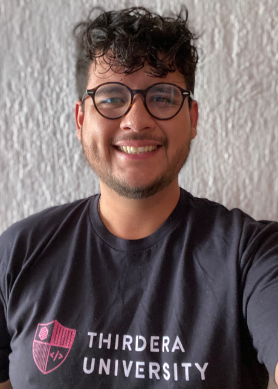

Diego Mendoza's Resume
Summary

A results-driven Senior Executive in Learning and Development with over 10 years of experience designing and delivering innovative training programs. For the past 4 years, I have been immersed in the ServiceNow ecosystem, specializing in creating and delivering comprehensive learning content for ServiceNow implementations. My expertise spans IT Service Management (ITSM), IT Asset Management (ITAM), System Administration, Configuration Management Database (CMDB), Human Resources (HR), and Customer Service Management (CSM).
I excel in developing a variety of engaging training materials, including training decks, hands-on laboratories, LMS interactive content, instructional videos, and study guides. My work is geared toward enabling individuals and teams to achieve SMART goals through effective training and skill development.
Certified as a ServiceNow System Administrator (CSA) and Certified Implementation Specialist (CIS) in IT Service Management, I am also authorized to teach ServiceNow Application Fundamentals (SNAF), ITSM Fundamentals, and ITSM Implementation. With a strong foundation in BPO operations and a passion for empowering learners, I am committed to driving organizational success through impactful training initiatives.
Education
- CBTIS 246 | 2009 - 2012
- Highschool Diploma in Tourism
- Instituto Tec Zapopan | 2022 - Current
- Business Management Engineering
Work Experience
Senior Executive - Learning and Development | Thirdera
- Delivered ServiceNow training and internal classes, achieving an average CSAT score of 4.86 across all taught sessions.
- Managed class administration by ensuring schedules were up to date, tracking CSAT scores, and maintaining accurate records.
- Led the migration of over 4,000 content records to a new LMS, while creating and maintaining courses, lessons, and study materials for certifications.
- Conducted weekly study preparation sessions to support students in passing ServiceNow certifications through study groups and mentoring.
- Played a key role in over 30 ServiceNow implementations, providing training consulting services tailored to client needs.
- Initiated and maintained DiegoDemos, a library of mini-videos covering both basic and advanced ServiceNow topics, available on Instagram and internal platforms.
- Developed diverse training content, including decks, hands-on labs, interactive videos, and administered LMS lessons and courses.
ServiceNow Certifications
- CSA - ServiceNow System Administrator
- CIS - ServiceNow IT Service Management
- Micro Cert - ServiceNow CMDB
- Micro Cert - ServiceNow Flow Designer
- CI Academy -Yellow, Green & Black Belt
Contact Me